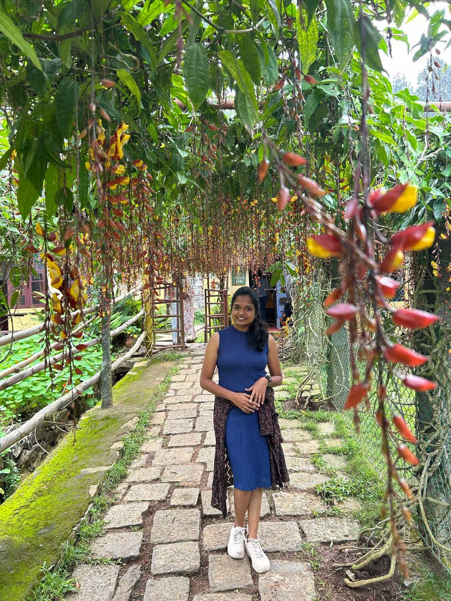

I'm a Senior UX Designer with 7+ years of experience turning complex enterprise systems into intuitive, human-centred products — across banking, logistics, healthcare, and telecom. From field portals for frontline workers to platforms serving millions, I care deeply about making things that quietly work.
I believe great design starts with deeply understanding people — their context, their frustrations, and the systems they navigate daily. Research-first isn't just a method for me. It's a mindset.
"Design is not just how it looks, it's how it works — for every human, in every context."
I read a lot — mostly fiction. Simple stories, complex characters. It's where I rest and see the world differently.
I try to write now and then. Thoughts, fragments, beginnings. Nothing finished yet — but the trying counts.
Sometimes I draw, sometimes I paint. Not often enough, but it keeps my hands connected to making things slowly.
Genuine chai addict and an even bigger fan of good conversations with new people I've never met before.
"Meenal made a strong contribution on our UX work and demonstrated a genuine commitment to user research. Her ability to deeply understand user needs and translate them into thoughtful design solutions was evident throughout the project."
"Meenal, it was a real pleasure working with you. Your passion, creativity and commitment made this project a success. I'm so glad we had the chance to work together — you made a real difference."
"Congratulations Meenal! Your ability to execute on the RSP project flawlessly — the dedication and attention to detail truly shone through in the final output."